Introducere
Fișierele PowerPoint se numesc prezentări . Ori de câte ori începeți un nou proiect în PowerPoint, va trebui să creați o nouă prezentare, care poate fi goală sau dintr-un șablon. De asemenea, va trebui să știți cum să deschideți o prezentare existentă.
Pentru a crea o prezentare nouă:Când începeți un nou proiect în PowerPoint, veți dori adesea să începeți cu o nouă prezentare goală.
- Selectați fila Fișier pentru a accesa vizualizarea în culise.
- Selectați Nou în partea stângă a ferestrei, apoi faceți clic pe Prezentare goală.
- Va apărea o nouă prezentare.
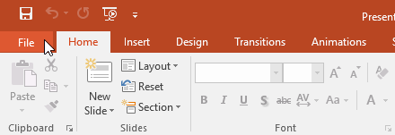
Un șablon este o prezentare prestabilită pe care o puteți utiliza pentru a crea rapid o nouă prezentare de diapozitive. Șabloanele includ adesea formatare și modele personalizate, astfel încât vă pot economisi mult timp și efort atunci când începeți un nou proiect.
- Faceți clic pe fila Fișier pentru a accesa vizualizarea în culise, apoi selectați Nou.
- Puteți da clic pe o căutare sugerată pentru a găsi șabloane sau puteți utiliza bara de căutare pentru a găsi ceva mai specific. În exemplul nostru, vom căuta cuvântul cheie tablă.
- Selectați un șablon pentru a-l revizui.
- Va apărea o previzualizare a șablonului, împreună cu informații suplimentare despre cum poate fi utilizat șablonul.
- Faceți clic pe Creare pentru a utiliza șablonul selectat.
- Va apărea o nouă prezentare cu șablonul selectat.
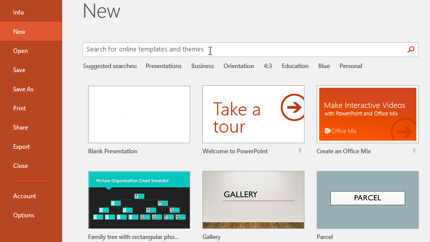
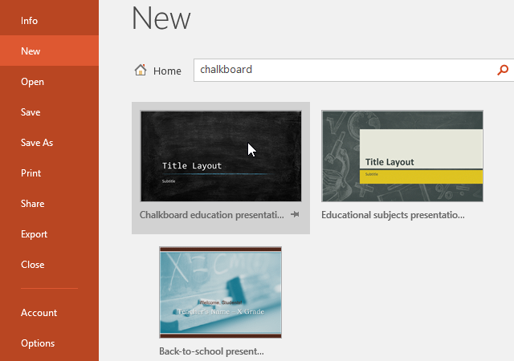
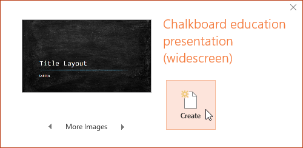
Pe lângă crearea de noi prezentări, va trebui adesea să deschideți o prezentare care a fost salvată anterior.
- Selectați fila Fișier pentru a accesa vizualizarea în culise, apoi faceți clic pe Deschidere.
- Faceți clic pe Răsfoire. De asemenea, puteți alege OneDrive pentru a deschide fișierele stocate pe OneDrive.
- Va apărea caseta de dialog Deschidere. Găsiți și selectați prezentarea dvs., apoi faceți clic pe Deschidere.
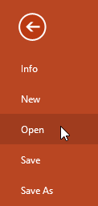
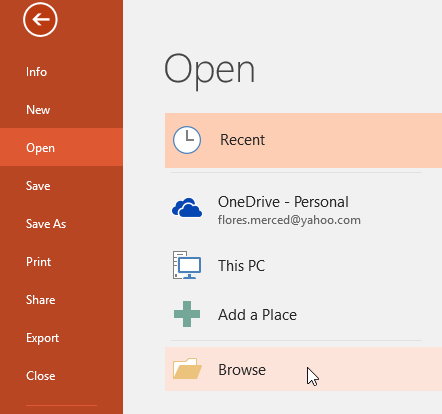
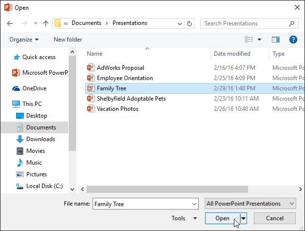
Dacă lucrați frecvent cu aceeași prezentare, o puteți fixa în vizualizarea Backstage pentru acces ușor.
- Selectați fila Fișier pentru a accesa vizualizarea în culise, apoi faceți clic pe Deschidere. Vor apărea prezentările tale recente.
- Treceți cu mouse-ul peste prezentarea pe care doriți să o fixați, apoi faceți clic pe pictograma accent.
- Prezentarea va rămâne în lista Prezentări recente până când nu este fixată. Pentru a anula fixarea unei prezentări, dați clic din nou pe pictograma acelui.
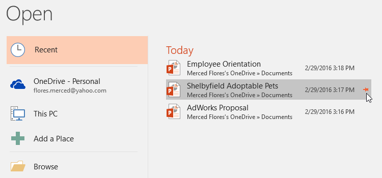
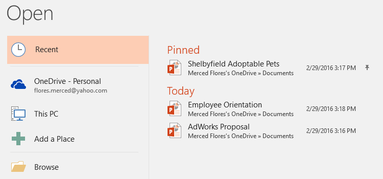
Uneori, poate fi necesar să lucrați cu prezentări care au fost create în versiuni anterioare de PowerPoint, cum ar fi PowerPoint 2003 sau PowerPoint 2000. Când deschideți aceste tipuri de prezentări, acestea vor apărea în Modul de compatibilitate.
Modul de compatibilitate dezactivează anumite funcții, astfel încât veți putea accesa doar comenzile găsite în programul care a fost folosit pentru a crea prezentarea. De exemplu, dacă deschideți o prezentare creată în PowerPoint 2003, puteți utiliza numai file și comenzi găsite în PowerPoint 2003.
În imaginea de mai jos, puteți vedea în partea de sus a ferestrei că prezentarea este în Modul de compatibilitate. Aceasta va dezactiva unele funcții PowerPoint curente, inclusiv tipuri mai noi de tranziții de diapozitive.
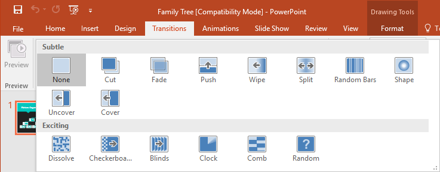
Pentru a ieși din Modul de compatibilitate, va trebui să convertiți prezentarea la tipul de versiune curentă. Cu toate acestea, dacă colaborați cu alții care au acces doar la o versiune anterioară de PowerPoint, cel mai bine este să lăsați prezentarea în Modul de compatibilitate, astfel încât formatul să nu se schimbe.
Pentru a converti o prezentare:Dacă doriți acces la caracteristicile mai noi, puteți converti prezentarea în formatul de fișier curent.
- Faceți clic pe fila Fișier pentru a accesa vizualizarea în culise.
- Găsiți și selectați comanda Convert.
- Va apărea caseta de dialog Salvare ca. Selectați locația în care doriți să salvați prezentarea, introduceți un nume de fișier și faceți clic pe Salvare.
- Prezentarea va fi convertită la cel mai nou tip de fișier.
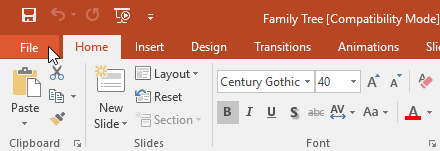
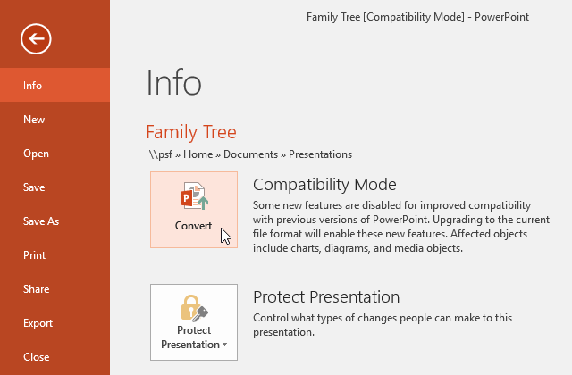
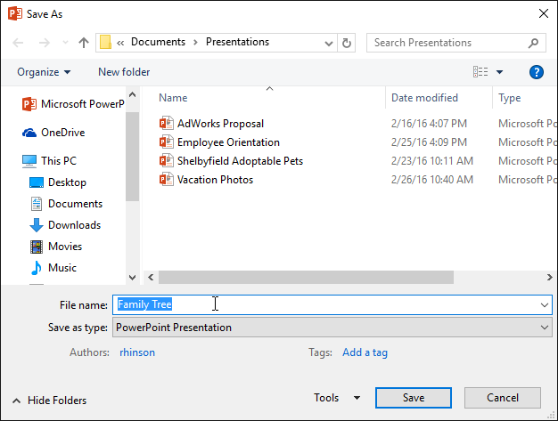